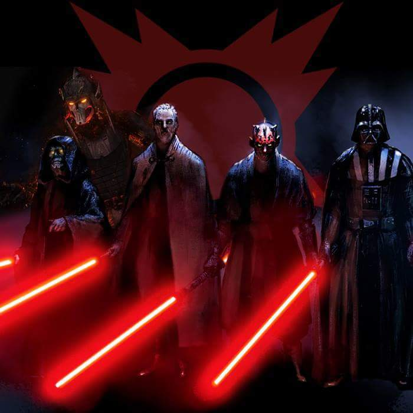
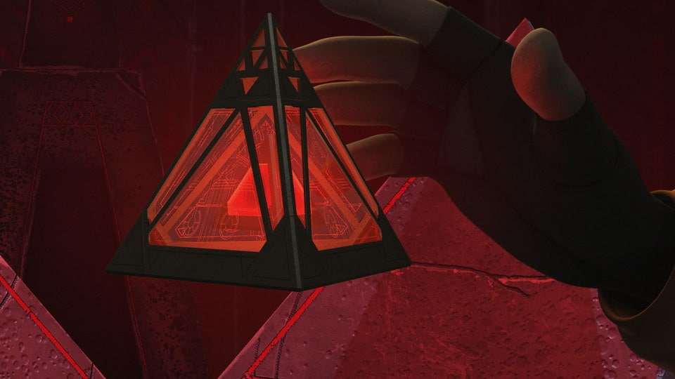

O que são
Composta por seres senciveis a força, devotos ao lado negro, movidos por emoções com o ódio e a raiva.
Tendo seu começo feito por um Jedi não identificado, acreditando que somente o lado Negro da acesso ao verdadeiro poder,
eles eram enganosos e obsecados por poder não imporeando o custo, eles alcançaram seu auge sob Darth Sidios, o sith que acabou com os Jedi.

Tesouros Sith
Os tesouros mais antigos e importantes do lodo Negro da Força, e um dos poucos meios de ensinar os segredos da magia e alquimia sith.
Holocrons: um meio pelo qual os sith armazenavam as suas informações mais importantes, geralmente com uma inteligencia artifisial propria.
Amuletos Sith: Um meio pelo qual os Lords Siths conjuravam magias e canalizavam o lado negro da Força, tendo também mais efeitos como a imortalidade.
Espadas Sith: Armas brancas feitas atrves de varios meios metalurgicos e rituas diferentes, resultando em uma arma com as mesmas propriedades de um sabre de luz.
todos as informações foram retiradas de um site feito por fãs.SITH. 2019. Disponível no botão abaixo Acesso em: 12 nov. 2019.
Sith